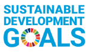
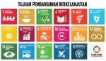
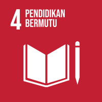

  
Sustainable Development Goals (SDGs) atau Tujuan Pembangunan Berkelanjutan (TPB) adalah agenda global yang terdiri dari 17 tujuan utama untuk mengatasi berbagai tantangan global. 17 tujuan tersebut adalah (1) Tanpa Kemiskinan; (2) Tanpa Kelaparan; (3) Kehidupan Sehat dan Sejahtera; (4) Pendidikan Berkualitas; (5) Kesetaraan Gender; (6) Air Bersih dan Sanitasi Layak; (7) Energi Bersih dan Terjangkau; (8) Pekerjaan Layak dan Pertumbuhan Ekonomi; (9) Industri, Inovasi dan Infrastruktur; (10) Berkurangnya Kesenjangan; (11) Kota dan Permukiman yang Berkelanjutan; (12) Konsumsi dan Produksi yang Bertanggung Jawab; (13) Penanganan Perubahan Iklim; (14) Ekosistem Lautan; (15) Ekosistem Daratan; (16) Perdamaian, Keadilan dan Kelembagaan yang Tangguh; dan (17) Kemitraan untuk Mencapai Tujuan. SDGs disepakati pada September 2015 oleh semua anggota Perserikatan Bangsa-Bangsa (PBB) sebagai kelanjutan dari Millennium Development Goals (MDGs) yang berakhir pada tahun 2015. Berbeda dengan MDGs, yang berfokus pada negara berkembang, SDGs berlaku universal untuk semua negara dan mencakup dimensi sosial, ekonomi, serta lingkungan dalam pembangunan. SDGs menjadi kerangka kerja global hingga tahun 2030 untuk menciptakan dunia yang lebih inklusif, berkelanjutan, dan sejahtera.
SDGs memiliki 17 tujuan utama yang mencakup aspek kesejahteraan masyarakat dan kelestarian lingkungan. Tujuan-tujuan ini meliputi penghapusan kemiskinan, pengentasan kelaparan, peningkatan kesehatan, pendidikan berkualitas, kesetaraan gender, air bersih, energi bersih, pekerjaan yang layak, serta tindakan untuk mitigasi perubahan iklim. Salah satu tujuan yang sangat relevan adalah tujuan ke-4, yaitu menjamin pendidikan yang inklusif, adil, dan berkualitas untuk semua. Untuk makalah kali ini, saya akan berfokus pada tujuan ke-4 karena pendidikan adalah fondasi penting bagi keberhasilan tujuan-tujuan lainnya. Pendidikan yang berkualitas dapat meningkatkan keterampilan kerja, menaikan sumber daya manusia dan mendukung pertumbuhan ekonomi yang berkelanjutan.
Negara-negara di dunia telah melakukan berbagai upaya untuk mewujudkan pendidikan yang inklusif dan berkualitas. Salah satunya adalah melalui kerjasama internasional, seperti program pertukaran pelajar, pelatihan guru, dan pendanaan infrastruktur pendidikan. Indonesia, sebagai bagian dari agenda SDGs, menjalin kerjasama dengan negara maju seperti Jepang melalui program beasiswa dan pelatihan teknologi pendidikan. Selain itu, pemerintah Indonesia juga memastikan bahwa akses pendidikan tersedia secara merata, termasuk di daerah terpencil. Kerjasama internasional ini tidak hanya membantu Indonesia meningkatkan kualitas pendidikan, tetapi juga memperkuat hubungan diplomatik dan mempercepat tercapainya tujuan pembangunan yang lebih luas.